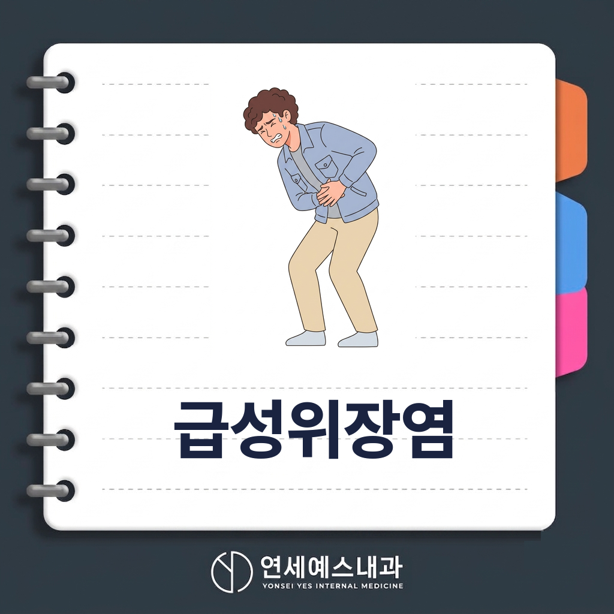
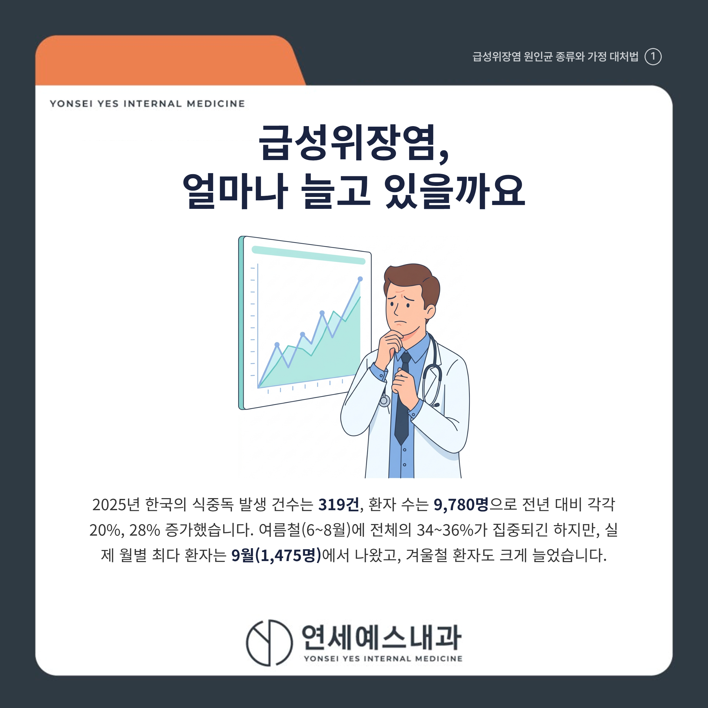
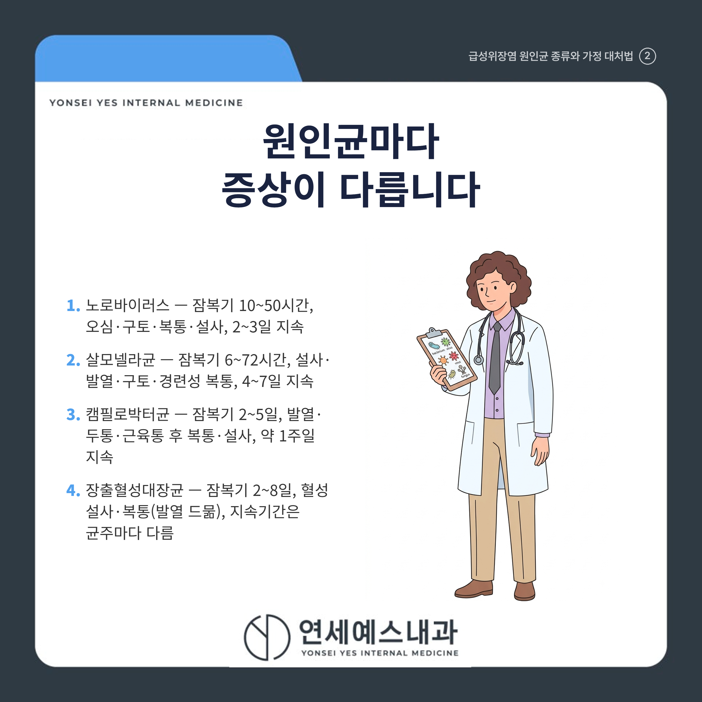
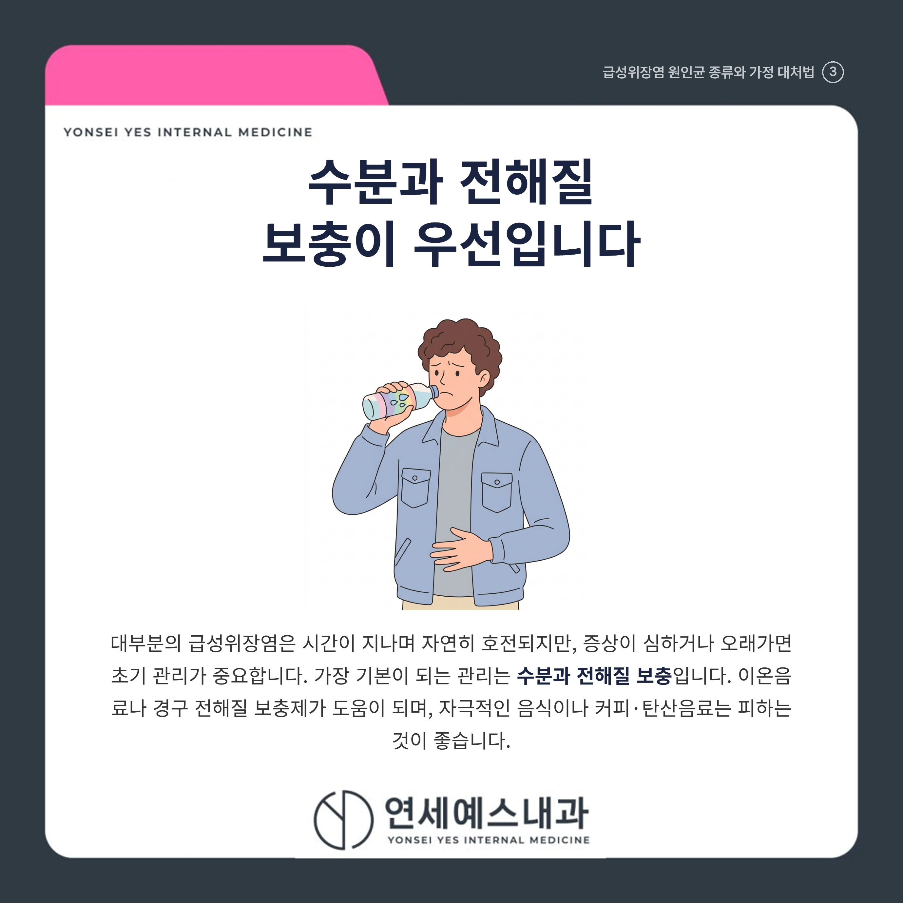
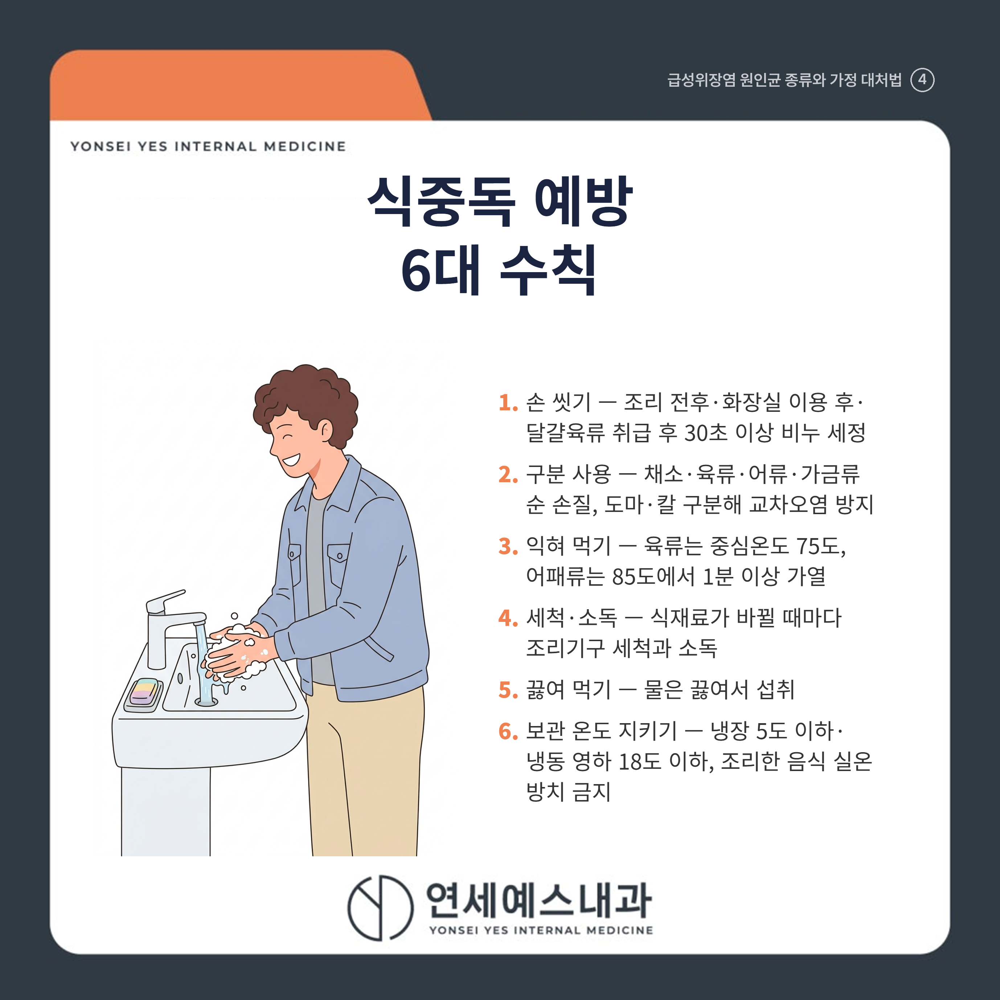

[주안동휴일진료내과연세예스내과] 급성위장염 원인균 종류와 가정 대처법

안녕하세요! 여러분의 건강 주치의 연세예스내과입니다. 😊
여름철 물놀이와 별미 먹거리 뒤에는 급성위장염(식중독) 위험이 따라옵니다.
하지만 초가을과 겨울에도 환자가 크게 늘고 있어 계절과 상관없이 배탈·설사를 가볍게 넘기면 안 됩니다.
오늘은 급성위장염 원인균의 특징과 가정 대처법을 정리해 드리겠습니다.
1. 🦠 급성위장염, 얼마나 늘고 있을까요?

급성위장염(식중독)은 오염된 음식이나 물로 바이러스·세균·기생충이 위장관에 침투해 염증을 일으키는 질환입니다. 설사, 구토, 복통이 대표 증상입니다.
2025년 국내 식중독은 319건, 환자 9,780명으로 전년 대비 건수 20%, 환자 28% 늘었습니다.
여름(6~8월)에 34~36%가 몰리지만, 월별 최다 환자는 9월(1,475명)에서 나왔고 겨울철 환자도 712명에서 1,625명으로 급증했습니다.
2025년 원인균 1위는 살모넬라균(환자 4,248명, 전체의 43%), 2위는 노로바이러스(환자 1,632명)였습니다.
2. 🔍 원인균마다 증상과 잠복기가 다릅니다

같은 급성위장염이라도 원인균에 따라 잠복기와 증상, 지속 기간이 다릅니다.
| 병원체 | 잠복기 | 주요 증상 | 지속 기간 |
|---|---|---|---|
| 노로바이러스 | 10~50시간 | 오심, 구토, 복통, 설사 | 2~3일 |
| 살모넬라균 | 6~72시간 | 설사, 발열, 구토, 경련성 복통 | 4~7일 |
| 캠필로박터균 | 2~5일 | 발열·두통·근육통 뒤 복통·설사 | 약 1주일 |
| 장출혈성대장균 | 2~8일 | 혈성 설사, 복통(발열 드묾) | 균주에 따라 다름 |
노로바이러스는 유행성 설사 질환의 약 90%를 차지하며, 굴 등 어패류나 오염된 물, 감염자 접촉으로 전파됩니다.
살모넬라균은 달걀과 취급 과정의 교차오염이, 캠필로박터균은 덜 익힌 닭고기 등 가금류 섭취가 주요 감염 경로입니다.
3. 🏠 가정에서는 이렇게 대처하세요

대부분은 시간이 지나며 자연히 호전됩니다. 다만 증상이 심하거나 오래가면 탈수·전해질 불균형으로 이어질 수 있어 초기 관리가 중요합니다.
가장 기본은 수분과 전해질 보충입니다. 이온음료나 경구 전해질 보충제가 도움이 되며, 자극적인 음식과 커피·탄산음료는 피하세요.
혈변이나 고열이 있을 때 지사제를 함부로 먹으면 세균과 독소 배출이 막혀 증상이 더 길어질 수 있습니다. 항생제는 바이러스성 위장염에 효과가 없고, 세균성이라도 처방된 용법과 기간을 지켜야 내성균을 막습니다.
4. 🚨 이런 증상이면 병원에 가야 합니다
아래 신호가 하나라도 있으면 자가 관리보다 가까운 내과 진료가 안전합니다.
[ ] 혈변, 점액·고름 섞인 변, 타르처럼 검은 변이 보인다
[ ] 갑작스럽고 심한 복통이 있다
[ ] 소변량이 줄고 어지럼증 등 탈수 증상이 있다
[ ] 39~40도 이상 고열이 2~3일 넘게 지속된다
[ ] 구토가 하루 이상, 심한 물설사가 반복된다
[ ] 의식이 흐려지거나 심한 무기력감이 나타난다
소아, 고령자, 만성질환자는 탈수와 합병증 진행이 빠릅니다. 특히 장출혈성대장균 감염은 드물게 용혈요독증후군(HUS, 신부전을 동반할 수 있는 합병증)으로 진행할 수 있어, 혈변이 동반된 설사는 특히 주의해야 합니다.
5. 🛡️ 식중독 예방 6대 수칙

식약처가 안내하는 예방 수칙입니다.
- 손 씻기: 조리 전후·화장실 후·달걀·육류 취급 후 30초 이상
- 칼·도마 구분: 채소 → 육류 → 어류 → 가금류 순으로 손질해 교차오염 방지
- 익혀 먹기: 육류는 중심온도 75도, 어패류는 85도에서 1분 이상
- 세척·소독: 식재료가 바뀔 때마다 조리기구 세척·소독
- 끓여 먹기: 물은 끓여서 섭취
- 온도 지키기: 냉장 5도 이하·냉동 영하 18도 이하, 조리한 음식은 실온에 오래 두지 않기
살모넬라는 달걀을 만진 뒤 꼭 손을 씻고, 캠필로박터는 닭고기 등 가금류를 충분히 익혀 먹는 것이 핵심입니다.
Q. 식중독은 여름에만 조심하면 되나요?
아닙니다. 앞서 봤듯 월별 최다 환자는 9월에 나왔고, 겨울철 환자도 두 배 넘게 늘었습니다.
손 씻기와 익혀 먹기 습관을 사계절 꾸준히 지키는 것이 가장 확실한 예방법입니다.
"설사와 구토는 몸이 보내는 경고 신호입니다. 며칠 참고 넘기기보다 원인을 확인하는 것이 먼저입니다."
급성위장염 증상이 가볍다고 방치하지 마시고, 혈변이나 고열 등 위험 신호가 보이면 미루지 말고 가까운 내과에서 진료받아 보시기 바랍니다.
※ 모든 치료 및 예방접종은 개인의 상태에 따라 발열, 통증, 알레르기 반응 등의 부작용이 나타날 수 있으므로, 반드시 의료진과 충분한 상담 후 진행하시기 바랍니다.
연세예스내과에서 전해드리는 건강 정보였습니다. 오늘도 건강하고 평안한 하루 보내세요!


#급성위장염 #식중독 #장염증상 #대장내시경 #검진 #주안동내과 #주안동의원 #주안동내과의원 #주안내과 #주안의원